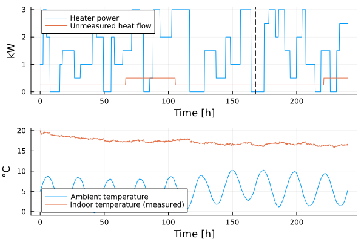
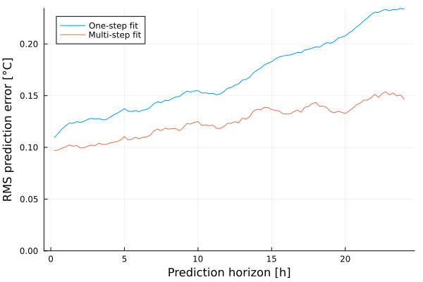
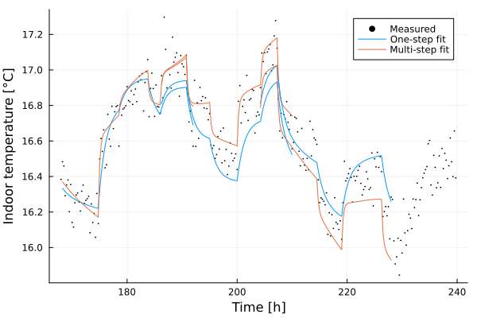
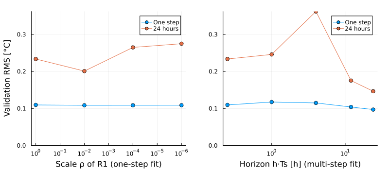

Multi-step prediction-error estimation
The prediction-error method described in Prediction-Error minimization using an optimizer minimizes the one-step-ahead prediction errors of a state estimator. When the estimated model is to be used for prediction over a longer horizon, for example, as the prediction model of an MPC controller, or when the dynamics are slow compared to the sample interval, the one-step criterion may yield a model that forecasts poorly. The one-step prediction is computed from a state estimate that the filter has just corrected using the most recent measurement, and the correction, in particular of disturbance state variables, can compensate for errors in the model. Model errors that only become apparent over many time steps therefore contribute little to the one-step criterion.
The functions LowLevelParticleFilters.multistep_prediction_errors! and LowLevelParticleFilters.multistep_sse instead compute the prediction errors over a horizon of h time steps. For each time step $k$, the filter is corrected with the measurement $y(k)$, after which the noise-free dynamics are simulated with the measured inputs to obtain the predictions $\hat y(k+j|k)$ for $j = 1, \dots, h$. The prediction errors $y(k+j) - \hat y(k+j|k)$ are returned in a form suitable for Gauss-Newton optimizers. This page compares one-step and multi-step prediction-error estimation of a building thermal model that is used to forecast the indoor temperature 24 hours ahead. A related discussion is found in the Discourse thread Robust resampling/interpolation method.
The system and the data
The time unit in this example is hours, heat flows are given in kW, thermal capacities in kWh/K and thermal resistances in K/kW. The system that generates the data has three thermal capacities: the indoor air (including light furniture), the building envelope and a heavy internal mass (floors and inner walls) that is coupled to the indoor air. The system is driven by the heater power $P_h$, the ambient temperature $T_a$ and an unmeasured heat flow $Q_d$ that represents, e.g., occupancy and solar gains:
\[\begin{aligned} C_i \dot T_i &= \dfrac{T_e - T_i}{R_{ie}} + \dfrac{T_m - T_i}{R_{im}} + P_h + Q_d \\ C_e \dot T_e &= \dfrac{T_i - T_e}{R_{ie}} + \dfrac{T_a - T_e}{R_{ea}} \\ C_m \dot T_m &= \dfrac{T_i - T_m}{R_{im}} \end{aligned}\]
The heater power consists of random steps, the ambient temperature has a daily variation and a slow random component, and the unmeasured heat flow changes in steps every one to three days. The indoor temperature is measured every 15 minutes. The first 7 days of data are used for estimation and the remaining 3 days for validation.
using LowLevelParticleFilters, SeeToDee, StaticArrays, LinearAlgebra, Statistics
using LowLevelParticleFilters: SimpleMvNormal
using LeastSquaresOptim, Plots, Random
Ts = 0.25 # Sample interval [h]
t_est = 7*24 # Duration of the estimation data [h]
t_val = 3*24 # Duration of the validation data [h]
N = round(Int, (t_est + t_val)/Ts)
Nest = round(Int, t_est/Ts)
t = range(0, step=Ts, length=N)
function house_true(x, u, p, t)
Ti, Te, Tm = x # Indoor, envelope and internal-mass temperatures [°C]
Ph, Ta, Qd = u # Heater power [kW], ambient temperature [°C], unmeasured heat flow [kW]
Ci, Ce, Cm, Rie, Rea, Rim = p
SA[
((Te - Ti)/Rie + (Tm - Ti)/Rim + Ph + Qd)/Ci,
((Ti - Te)/Rie + (Ta - Te)/Rea)/Ce,
((Ti - Tm)/Rim)/Cm,
]
end
p_system = [1.0, 8.0, 30.0, 1.5, 4.0, 0.2]
discrete_house_true = SeeToDee.Rk4(house_true, Ts)
function random_steps(N, levels, minlength, maxlength)
v = Float64[]
while length(v) < N
append!(v, fill(rand(levels), rand(minlength:maxlength)))
end
v[1:N]
end
Ph = random_steps(N, 0:0.5:3, round(Int, 2/Ts), round(Int, 10/Ts))
Ta = 5 .+ 4sin.(2π .* t ./ 24) .+ cumsum(0.05randn(N))
Qd = random_steps(N, 0:0.25:0.5, round(Int, 24/Ts), round(Int, 72/Ts))
x_true = [SA[20.0, 12.0, 20.0]]
for k in 1:N-1
push!(x_true, discrete_house_true(x_true[end], SA[Ph[k], Ta[k], Qd[k]], p_system, t[k]))
end
σy = 0.1
y = [SA[x[1] + σy*randn()] for x in x_true] # Measured indoor temperature
u = [SA[Ph[k], Ta[k]] for k in 1:N] # Measured inputs
ue, ye = u[1:Nest], y[1:Nest] # Estimation data
plot(
plot(t, [Ph Qd], label=["Heater power" "Unmeasured heat flow"], ylabel="kW"),
plot(t, [Ta getindex.(y, 1)], label=["Ambient temperature" "Indoor temperature (measured)"], ylabel="°C"),
layout=(2, 1), xlabel="Time [h]",
)
vline!([t_est], sp=[1 2], label="", color=:black, linestyle=:dash)
The model and the filter
The model used for estimation lacks the internal mass, and is thus structurally incorrect. In order to account for the unmeasured heat flow, the model includes a disturbance state variable $d$, modeled as integrated white noise, that enters the heat balance of the indoor air:
\[\begin{aligned} C_i \dot T_i &= \dfrac{T_e - T_i}{R_{ie}} + P_h + d \\ C_e \dot T_e &= \dfrac{T_i - T_e}{R_{ie}} + \dfrac{T_a - T_e}{R_{ea}} \\ \dot d &= w \end{aligned}\]
The unknown parameters $C_i, C_e, R_{ie}, R_{ea}$ are positive, and we therefore estimate their logarithms. The state estimator is an ExtendedKalmanFilter. The dynamics noise of the disturbance state variable is chosen large enough for the filter to follow changes in the unmeasured heat flow within a few hours. As usual when the filter is differentiated with respect to the parameters, the initial state distribution is constructed with the element type of the parameter vector.
function house(x, u, p, t)
Ti, Te, d = x
Ph, Ta = u
Ci, Ce, Rie, Rea = exp.(p)
SA[
((Te - Ti)/Rie + Ph + d)/Ci,
((Ti - Te)/Rie + (Ta - Te)/Rea)/Ce,
zero(Ti), # d is modeled as integrated white noise
]
end
measurement(x, u, p, t) = SA[x[1]]
discrete_house = SeeToDee.Rk4(house, Ts)
nx, nu, ny = 3, 2, 1
R1 = SMatrix{nx,nx}(Diagonal([1e-4, 1e-4, 1e-2]))
R2 = SMatrix{ny,ny}(Diagonal([σy^2]))
x0 = SA[20.0, 12.0, 0.0]
P0 = SMatrix{nx,nx}(Diagonal([0.1, 4.0, 1.0])) # The envelope temperature is not measured
function filter_from_parameters(θ, ρ = 1)
T = eltype(θ)
ExtendedKalmanFilter(discrete_house, measurement, ρ*R1, R2, SimpleMvNormal(T.(x0), T.(P0)); nu, Ts, p = θ)
end
θ0 = log.([2.0, 5.0, 1.0, 3.0]) # Initial guess of [Ci, Ce, Rie, Rea]
h = round(Int, 24/Ts) # Prediction horizon corresponding to 24 hoursVerification of the cost function
Before the estimation, it is advisable to verify that the cost function is implemented consistently with the model. If the data are generated by the model itself without noise, with the initial state equal to the mean of the initial state distribution of the filter, the multi-step prediction errors are zero for any parameter vector. A nonzero value indicates an inconsistency, for example, a misalignment between the time indices of the inputs and the outputs.
θcheck = θ0
x_check = [x0]
for k in 1:Nest-1
push!(x_check, discrete_house(x_check[end], ue[k], θcheck, t[k]))
end
y_check = measurement.(x_check, ue, Ref(θcheck), t[1:Nest])
LowLevelParticleFilters.multistep_sse(filter_from_parameters(θcheck), ue, y_check, θcheck; h)0.0One-step and multi-step estimation
Both estimates are computed with the Levenberg-Marquardt algorithm from LeastSquaresOptim.jl, using the residual functions LowLevelParticleFilters.prediction_errors! and LowLevelParticleFilters.multistep_prediction_errors!, respectively. The residual vector of the one-step criterion has length length(y)*ny, while the residual vector of the multi-step criterion has length length(y)*h*ny. The keyword argument ρ scales the dynamics noise covariance and is used further below.
function fit_onestep(θ0; ρ = 1)
residuals!(r, θ) = LowLevelParticleFilters.prediction_errors!(r, filter_from_parameters(θ, ρ), ue, ye, θ)
problem = LeastSquaresProblem(x = copy(θ0), f! = residuals!, output_length = Nest*ny, autodiff = :forward)
optimize!(problem, LevenbergMarquardt()).minimizer
end
function fit_multistep(θ0; h)
residuals!(r, θ) = LowLevelParticleFilters.multistep_prediction_errors!(r, filter_from_parameters(θ), ue, ye, θ; h)
problem = LeastSquaresProblem(x = copy(θ0), f! = residuals!, output_length = Nest*h*ny, autodiff = :forward)
optimize!(problem, LevenbergMarquardt()).minimizer
end
θ_onestep = fit_onestep(θ0)
θ_multistep = fit_multistep(θ0; h)
[exp.(θ_onestep) exp.(θ_multistep)] # Columns: one-step and multi-step estimates of [Ci, Ce, Rie, Rea]4×2 Matrix{Float64}:
5.63392 1.31622
93.6597 36.8327
0.233065 0.188328
3.17353 6.4251Since the model lacks the internal mass, there are no true values of the parameters to compare with. The one-step estimate of the envelope capacity $C_e$ is, however, several times larger than any of the capacities of the system that generated the data, while the multi-step estimate is of similar magnitude as the combined capacity of the envelope and the internal mass.
Validation of the forecasts
To evaluate the models, we run each filter along the entire data set and compute the prediction errors for all forecasts that start in the validation part of the data. The residual vector computed by multistep_prediction_errors! stores the prediction error $e(k+j|k)$ at the indices ((k-1)*h + j-1)*ny .+ (1:ny), which for ny = 1 corresponds to the element E[j, k] of the reshaped matrix below. The root-mean-square (RMS) prediction error as a function of the prediction horizon is shown in the figure.
function lead_time_rms(θ; h = h)
r = zeros(N*h*ny)
LowLevelParticleFilters.multistep_prediction_errors!(r, filter_from_parameters(θ), u, y, θ; h)
E = reshape(r, h, N) # The prediction error e(k+j|k) is stored in E[j, k]
[sqrt(mean(abs2, E[j, Nest+1:N-j])) for j in 1:h]
end
rms_onestep = lead_time_rms(θ_onestep)
rms_multistep = lead_time_rms(θ_multistep)
plot((1:h)*Ts, [rms_onestep rms_multistep], label=["One-step fit" "Multi-step fit"], xlabel="Prediction horizon [h]", ylabel="RMS prediction error [°C]", ylims=(0, Inf))
The RMS errors of the one-step predictions and of the 24-hour forecasts are
(; one_step = (rms_onestep[1], rms_multistep[1]), twentyfour_hours = (rms_onestep[end], rms_multistep[end]))(one_step = (0.10947457104302731, 0.09697118493266023), twentyfour_hours = (0.23353360530969547, 0.1464618668529847))The multi-step fit reduces the RMS error of the 24-hour forecasts substantially, without increasing the one-step error. The figure below shows 24-hour forecasts that start from the filtered state estimates $\hat x(k|k)$ at a number of time points in the validation data. A forecast is computed by simulating the noise-free model dynamics with the measured inputs.
function forecast(θ, sol, k, h)
xs = [sol.xt[k]]
for j in 1:h
push!(xs, discrete_house(xs[end], u[k+j-1], θ, t[k+j-1]))
end
getindex.(xs[2:end], 1)
end
sol_onestep = forward_trajectory(filter_from_parameters(θ_onestep), u, y, θ_onestep)
sol_multistep = forward_trajectory(filter_from_parameters(θ_multistep), u, y, θ_multistep)
scatter(t[Nest+1:end], getindex.(y[Nest+1:end], 1), label="Measured", markersize=1, color=:black, xlabel="Time [h]", ylabel="Indoor temperature [°C]")
for (i, k) in enumerate(Nest .+ (1:round(Int, 18/Ts):N-Nest-h))
tk = t[k+1:k+h]
plot!(tk, forecast(θ_onestep, sol_onestep, k, h), color=1, label = i == 1 ? "One-step fit" : "")
plot!(tk, forecast(θ_multistep, sol_multistep, k, h), color=2, label = i == 1 ? "Multi-step fit" : "")
end
Filtering, prediction and simulation
The one-step criterion and a simulation-error criterion are the two extremes of a continuum, which may be explored in two ways:
- The covariance of the dynamics noise. As $R_1 \to 0$, the Kalman gain tends to zero after the initial transient, and the filter approaches a pure simulator of the model. One-step prediction-error estimation then approaches simulation-error estimation, where the initial state is estimated by the first few corrections of the filter. The scale $ρ$ of $R_1$ thus determines the trade-off between filtering and simulation in the one-step criterion.
- The horizon of the multi-step criterion. With
h = 1, the multi-step criterion coincides with the one-step criterion apart from the prediction error of the first time step, and ashincreases, the criterion places increasing weight on the long-range behavior of the model. In contrast to a pure simulation-error criterion, each prediction starts from a state estimate that has been corrected by the measurements, so that the effect of the unmeasured heat flow at the start of the forecast is accounted for.
We repeat the one-step estimation for a range of values of $ρ$, and the multi-step estimation for a range of horizons. All models are evaluated with the same validation procedure as above, i.e., with the nominal dynamics noise covariance.
ρs = [1, 1e-2, 1e-4, 1e-6]
hs = [1, 4, 16, 48, 96]
sweep_ρ = map(ρs) do ρ
r = lead_time_rms(fit_onestep(θ0; ρ))
(r[1], r[end])
end
sweep_h = map(hs) do hi
r = lead_time_rms(fit_multistep(θ0; h = hi))
(r[1], r[end])
end
plot(
plot(ρs, [first.(sweep_ρ) last.(sweep_ρ)], xscale=:log10, xflip=true, m=:o, label=["One step" "24 hours"], xlabel="Scale ρ of R1 (one-step fit)", ylabel="Validation RMS [°C]"),
plot(hs .* Ts, [first.(sweep_h) last.(sweep_h)], xscale=:log10, m=:o, label=["One step" "24 hours"], xlabel="Horizon h⋅Ts [h] (multi-step fit)"),
link=:y, ylims=(0, Inf), size=(800, 350), margin=4Plots.mm,
)
The left panel shows that decreasing $ρ$ initially improves the 24-hour forecasts, but that the forecasts deteriorate as the one-step criterion approaches a simulation-error criterion. A simulation-error criterion cannot account for the unmeasured heat flow, which then biases the parameter estimates. The right panel shows that the 24-hour forecast error is smallest when the horizon of the criterion covers the forecast horizon of interest. A horizon that is shorter than the forecast horizon of interest does not necessarily improve the long-range forecasts, since the model is then fitted to the dynamics at intermediate time scales only.
Noise covariances
The sum of squared multi-step prediction errors is not a log-likelihood, since the prediction errors of overlapping horizons are correlated, and the multi-step criterion can therefore not be used to estimate the noise covariances. Once the parameters of the model have been estimated, the covariances may be estimated by maximum likelihood with the model parameters fixed, for example, using autotune_covariances. The parameters stored in the filter are used during the tuning.
sol_est = forward_trajectory(filter_from_parameters(θ_multistep), ue, ye, θ_multistep)
tuned = autotune_covariances(sol_est; show_trace = false)
(; R1 = diag(tuned.R1), R2 = diag(tuned.R2))(R1 = [1.5099716369886065e-20, 1.4629579096076966e-5, 0.0001795719999928127], R2 = [0.009594407751892249])The tuned filter tuned.filter may subsequently be used for state estimation. If the tuned covariances differ substantially from the covariances used during the estimation of the model parameters, the parameters may be re-estimated with the tuned covariances. See Maximum-likelihood and MAP estimation for more details on likelihood-based estimation.
Practical considerations
- Choice of horizon. Choose
has the horizon over which the model is to be used, e.g., the prediction horizon of an MPC controller, or approximately the dominant time constant of the system if no specific horizon is given. The keyword argumenthorizon_weightsallows the prediction steps to be weighted individually. - Computational cost. The cost of evaluating the multi-step criterion is approximately
hevaluations of the dynamics and measurement functions per time step in addition to the cost of filtering, and the residual vector hashtimes as many entries as the one-step residual vector. For long data sets and horizons, a subset of the forecast start times may be used. - Scaling. For systems with several outputs, the weight
λshould be chosen such that the outputs contribute in proportion to their importance, e.g.,λ = Diagonal(1 ./ mag.^2)wheremagcontains the typical magnitudes of the outputs. - Identifiability. Inputs that are correlated with each other, such as a heater that is controlled based on the ambient temperature, reduce the ability to distinguish the influence of each input. The inputs in this example are independent. See Identifiability for methods to assess identifiability.
- Linear black-box models. For linear black-box models, the function
newpem(d, nx; h)in ControlSystemIdentification.jl performs multi-step prediction-error estimation, where the Kalman gain is estimated jointly with the model.